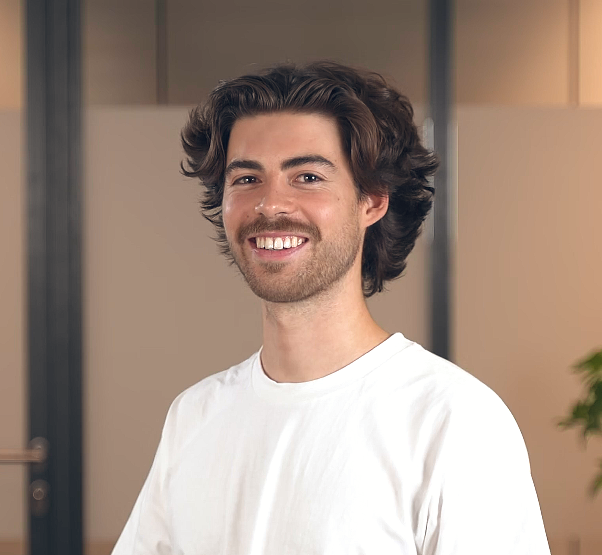
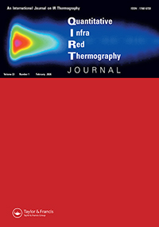
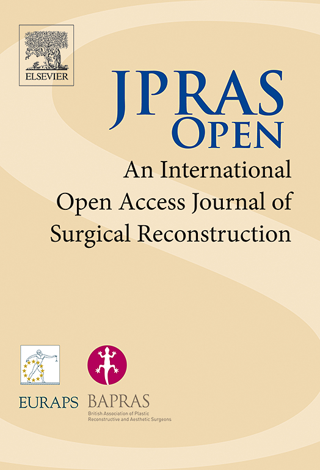
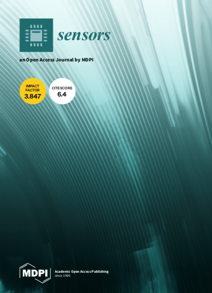
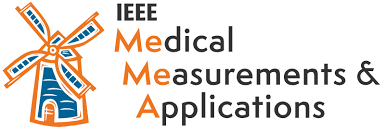

PhD Researcher
University of Antwerp · Research Foundation Flanders (FWO)
Developing methods to optimize breast reconstruction using thermography, finite element modeling, and artificial intelligence.

PhD researcher working at the intersection of thermography, finite element modeling, and artificial intelligence for medical and biomedical applications, with a focus on breast reconstruction.
I am always happy to connect with researchers, clinicians, and industry partners interested in collaboration, conference discussions, or applied research opportunities.
University of Antwerp · Research Foundation Flanders (FWO)
Developing methods to optimize breast reconstruction using thermography, finite element modeling, and artificial intelligence.
Industrial Vision Lab (InViLab), University of Antwerp
Working on thermographic imaging, medical measurements, and computational approaches across biomedical applications.





University of Antwerp
University of Antwerp